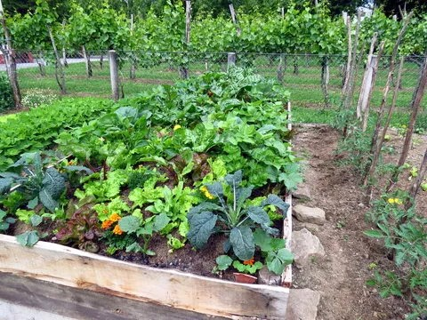
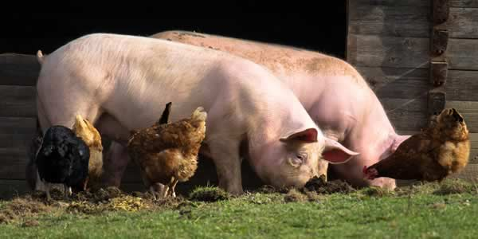
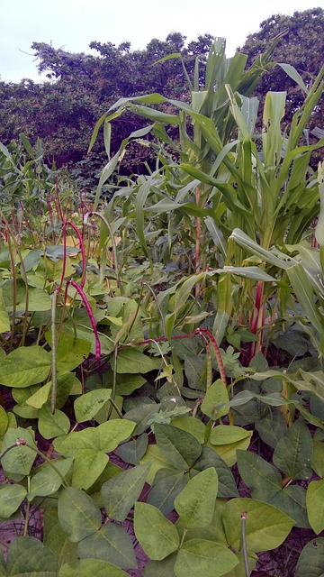
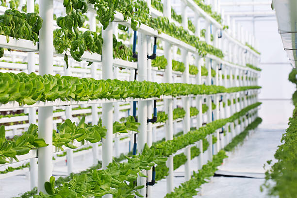
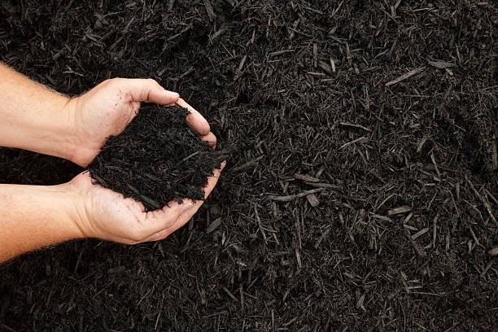
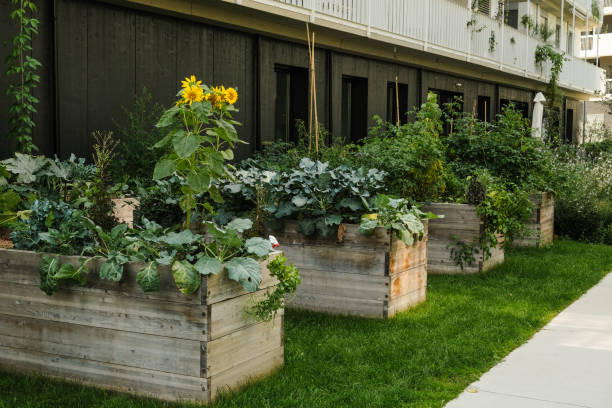
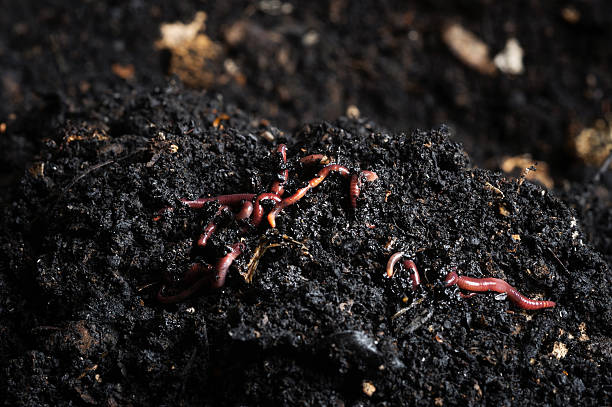
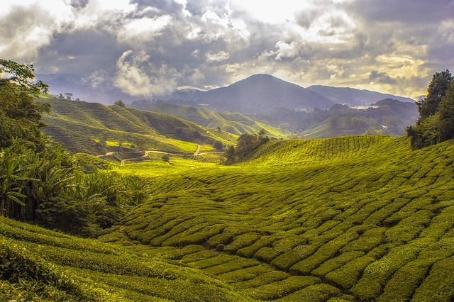
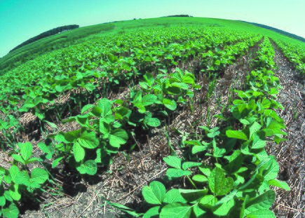

10 Sustainable Farming Methods and Practices
There are farming methods which can be applied to sustain environment as well as agriculture without lossing profit from farming. Although, with variations of crops, the style of farming also changes as different crops have different conditions.
| Methods | Description | Image |
| Permaculture | Permaculture is a design system for creating sustainable and regenerative agricultural landscapes. It is an integration of organic farming practices, holistic management, and design. The word "permaculture" is derived from the words "permanent" and "agriculture," and it is often described as "ecological agriculture." The system aims to optimize natural resource usage and reduce the overall impact of human activities on the environment. The fundamental principle of permaculture is to 'observe and interact', meaning that we learn from nature and our environment. By studying patterns in nature, we can create a design system that emulates natural processes and ensures a long-lasting and regenerative system. |  |
| Biodynamic | Biodynamic farming is a form of organic farming that focuses on holistic management of the land, crops, livestock, and the farm's biodiversity. This approach considers the cosmic, biological, and mineral aspects of farming and incorporates astrological, climatic, and biological influences into farming practices. One of the core principles of Biodynamic Farming is the spacing of crops, which allows for a balanced relationship between plants, the environment, and the farmer. The goal is to achieve a harmonious and healthy relationship between all three parties. Biodynamics emphasizes the importance of reducing the use of off-site inputs (such as importing soil fertility) by generating the necessary health and soil fertility for food production onsite. This is achieved through the implementation of practices such as composting, application of animal manure from farmed animals, cover cropping or rotating complementary crops. |  |
| Agroforestry | Agroforestry is techniques of agriculture and forestry to improve productivity, protect the environment, and enhance social well-being. It is particularly suitable for developing countries, where traditional farming practices may not be sustainable, and where access to land and resources may be limited. Agroforestry systems typically involve the planting of trees and shrubs within agricultural landscapes. This can help to increase soil fertility, protect against erosion, and conserve water. Additionally, agroforestry systems can provide multiple benefits, such as shade, fodder, timber, and firewood. Trees create a favorable microclimate that maintains favorable temperature and soil humidity, while protecting crops from wind or heavy rain. Trees have another important role,they stabilize soils, minimize nutrient runoff and improve soil structure. This is the reason why agroforestry has become one of the powerful tools of farmers in dry regions with soils susceptible to desertification. |  |
| Hydroponics | Hydroponics is a method of growing plants in a controlled environment by delivering all necessary nutrients to the plants through a solution of water. It allows for the growth of plants
without soil, reducing water usage, and minimizing space requirements. Hydroponics combines the raising of aquatic animals (such as fish) with the growing of hydroponic crops. In aquaponic systems, the water containing the waste material from the their development cycles get interrupted by changing crops. These practices also lead to reductions in the need to apply fertilizers and pesticides. The principal advantage is the saving of labour by automatic watering and fertilizing. Hydroponic systems can be set up indoors in places that would not normally be available for the growing of plants. Also in Hydroponics , Climate is not a main factor anymore. |  |
| Mulching | Mulching is the process of spreading organic material over the surface of the soil to improve its structure, water retention, and fertility. The material used for mulching is typically called
"mulch" and can be composed of a variety of organic materials such as leaves, bark, straw, compost, or even shredded paper. When applying mulch, it is important to ensure that it is applied uniformly and not piled up too high, as this can prevent the necessary soil activities and can lead to problems such as compacted soil or excessive heat build-up. Trees create a favorable microclimate that maintains favorable temperature and soil humidity, while protecting crops from wind or heavy rain. Trees have another important role,they stabilize soils, minimize nutrient runoff and improve soil structure. This is the reason why agroforestry has become one of the powerful tools of farmers in dry regions with soils susceptible to desertification. |  |
| Crop rotation | Crop rotation is a farming technique in which crops are grown in a specific order or sequence. The goal of crop rotation is to improve soil fertility, suppress weeds, prevent pests, and
conserve water. This is commonly used in intensive agriculture and can involve annual crops, biennial crops, and perennial crops. Each year, the crop rotation advances to the next. crop type, with a period of time set aside for each crop type. By diversifying the crops that are grown on an area of land in rotation of crops that are grown, farmers can greatly reduce the opportunity for disease and pests to take hold. It is because their development cycles get interrupted by changing crops. These practices also lead to reductions in the need to apply fertilizers and pesticides. The principle of crop rotation is to grow specific groups of vegetables on a different part of the vegetable plot each year. This helps to reduce a build-up of crop-specific pest and disease problems and it organises groups of crops according to their cultivation needs. |  |
| Urban agriculture | Urban agriculture is the practice of farming or gardening within urban areas. This practice involves growing a variety of food, feed, and fiber crops within the city or town limits.
This includes practices such as animal husbandary, aquaculture,beekeeping, and horticulture in an urban context. Many innovative and sustainable growing techniques are already being used in cities, including backyard farms and gardens, community gardens, rooftop farms, growing crops in urban greenhouses, indoor hydroponic farms, and perhaps even growing food inside urban farm towers. The features of urban agriculture relate to urban food supply systems, urban land management, urban survival strategies, sustainable urban development, urban food security, and to rural agriculture in urban areas. |  |
| Vermicomposting |
Vermicomposting, also known as vermiculture or worm casting, is a method of converting organic waste into nutrient-rich castings or bokashi. This process involves the symbiotic relationship between the Vermicomposter red worms, and bacteria and promotes a natural and eco-friendly approach to waste management and fertilization. Vermicompost is often used as top or side dressing for one’s most demanding and deserving plants and are generally mixed with regular compost it adds a boost to garden soil. It is important to note that vermicomposting should not be used to treat pathogenic or potentially harmful waste, such as infectious human or animal waste. |  |
| Contour farming | Contour farming is a soil preparation method used to optimize the performance of crop plants.
This technique involves creating ridges or contours on the soil surface, which improves water infiltration and air circulation around the plants.
The resulting system can increase soil water availability and promote root growth. Once the contours are established, plant your crops according to the specific requirements of each crop. By using contour farming, you can enhance soil water infiltration, improve air circulation, and ultimately increase crop yields. Contour farming may not be suitable for all types of soil or crops. In such cases, alternative soil preparation methods like ploughing, cultivating, or furrowing may be more appropriate. |  |
| No-till farming |
No-till farming is an agricultural technique in which farmers do not remove the soil's natural protective cover, such as the grass and weed layer. Instead of using plows or tillers, they utilize alternative methods like crop rotation, cover cropping, and composting to maintain or improve soil health. Instead of tilling, farmers maintain the existing cover of the soil. This cover includes weeds, grasses, and other plant debris that can act as a mulch, providing a protective layer to the soil and reducing erosion. No-till farming is an alternative approach to traditional farming practices that prioritizes the conservation of soil health and resources. |  |